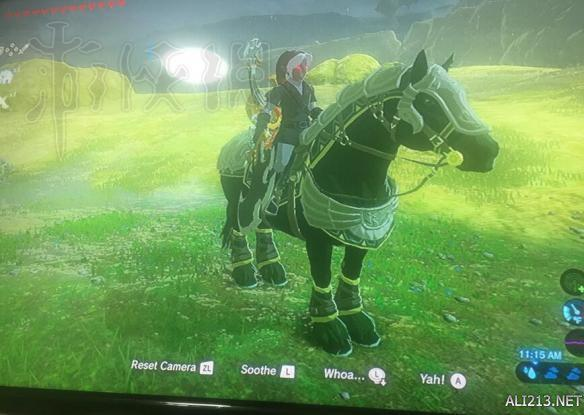
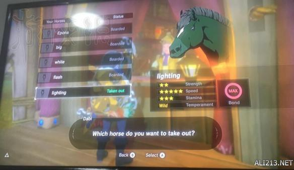
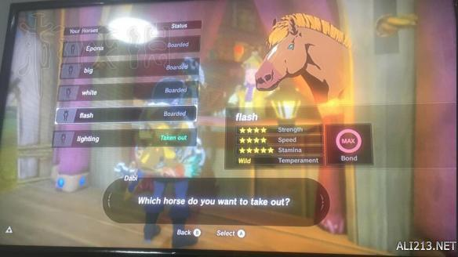
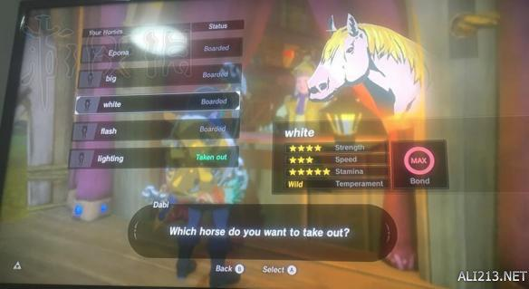
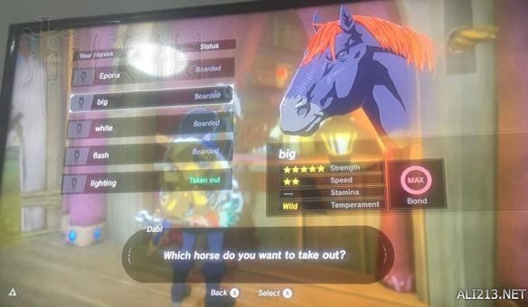
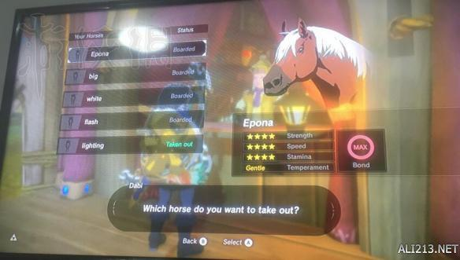

塞尔达传说荒野之息游戏中哪些地方抓马最方便?性能最好的马有哪些?游戏中的马还是非常重要的，今天给大家带来了“kyo_舜”分整理的塞尔达传说荒野之息最好性能的马分享，一起来看下吧。
最好性能的马分享






以上其实就是整个游戏能收集的性能最好的几匹马了，实际上还有一只535的马，不过我放生了，原谅我没有图。
大家都知道，整个游戏陪伴我们最多哦哦的就是马，而且马的性能决定了整个游戏的进行时间，我就是给大家放两个抓马的位置方便大家。
以上就是关于塞尔达传说荒野之息最好性能的马分享，希望对大家有帮助。